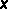

Select Functions to Convert Page (Import Shared Library Wizard)
Requires: Base Development System
Use this page of the Import Shared Library wizard to select the functions you want to import from the shared library file that you specified. This page also displays information about any errors or warnings the wizard encountered while parsing the header file you specified. Select Tools»Import»Shared Library to launch the Import Shared Library wizard.
This page includes the following components:
Functions—Lists all the functions in the shared library file. Place a checkmark in the checkbox next to each function you want the wizard to import. If the wizard cannot import a function, the function appears with a black  glyph beside the function name. Select the function to display possible reasons for the error.
Check All—Places a checkmark in the checkbox of every function in the Functions list.
Uncheck All—Removes the checkmark from the checkbox of every function in the Functions list.